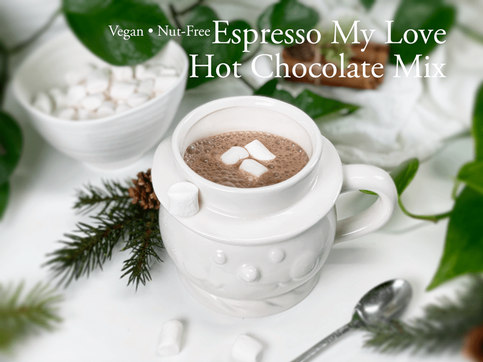
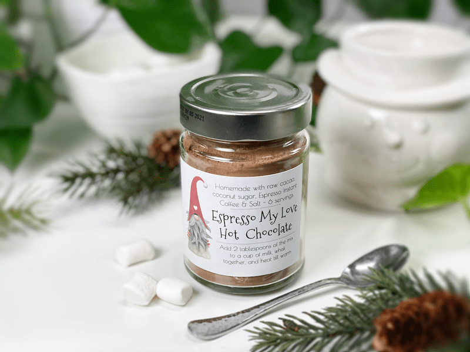
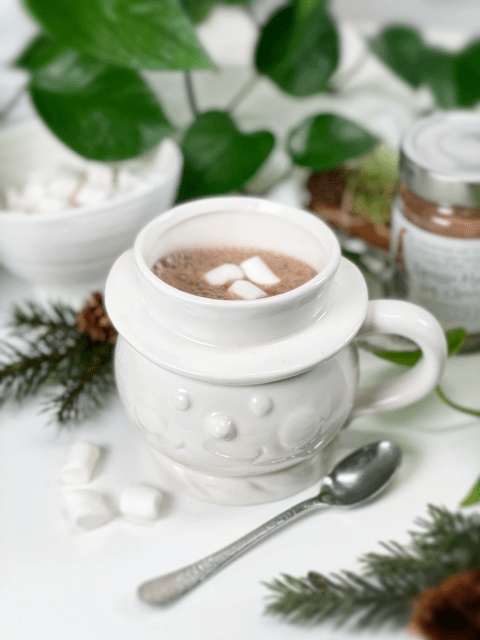
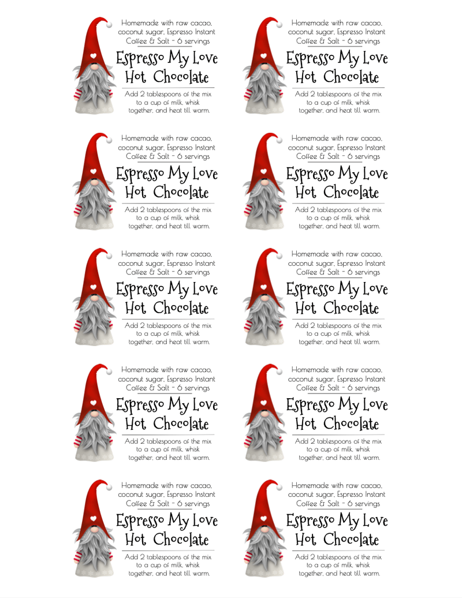

Espresso My Love Hot Chocolate Mix | Label PDF Included
Looking for a way to espresso your love? Perhaps you are familiar with the 5 love languages — Words of Affirmation, Acts of Service, Receiving Gifts, Quality Time, and Physical Touch. Discovering and learning to speak the primary love language of someone you love can radically strengthen and improve your relationship with them. What does this have to do with my recipe for Espresso My Love Hot Chocolate Mix? You’d be surprised.

The Five Love Languages
- Words of Affirmation — If this is a person’s love language, unsolicited compliments mean the world to them. They thrive on hearing kind and encouraging words that build them up. So, hearing the words “You are amazing, you are worthy, you are cherished” as you hand them a warm mug of delicious, rich hot chocolate will speak volumes to them.
- Acts of Service — Can acts of service really be an expression of love? Absolutely! When you serve others out of love (and not obligation), they feel truly valued and loved. The words he or she most wants to hear: “Wait, let me do that for you,” or “Let me make a cup of hot chocolate for you,” can really recharge their love batteries.
- Receiving Gifts —Don’t mistake this love language for materialism; the receiver of gifts thrives on the love, thoughtfulness, and effort behind the gift. If you speak this language, the perfect gift or gesture shows that you are known, you are cared for, and you are prized above whatever was sacrificed to bring the gift to you. And why not express this with a gift of hot chocolate mix… the gift that can warm the soul?
- Quality Time — In quality time, nothing says “I love you” like full, undivided attention. Being there for this type of person is critical, but really being there—with the TV off, fork and knife down, and all chores and tasks on standby—makes one feel truly special and loved. So, when you make a mug of warm hot chocolate for that special person, make one for yourself, and join them, giving them your undivided attention.
- Physical Touch — A person whose primary language is physical touch is, not surprisingly, very touchy. Hugs, pats on the back, and thoughtful touches on the arm—they can all be ways to show excitement, concern, care, and love.
Regardless of what a person’s love language is, this hot chocolate mix will have you covered. As you hand that special person a mug of hot chocolate and they cup their hands around it, place your hands over theirs as you look them in the eye, letting them know how special they are. Express that you wish to share some quality time with them and what a gift that would be. See how all five love languages are covered in this one simple act?

Gift Idea
This hot chocolate mix is perfect for gift-giving. Just package it up in a jar or bag, write the directions and gift it to neighbors, family, or friends! Easy holiday gift! This year, due to the shortage of jars, I am using old jam jars that I painstakingly scrubbed to remove the manufacturers’ labels.
There should be a law that if a company is going to sell products in glass containers, the labels should be removable. That way we would have more people reusing them rather than tossing them in the bin.
When I printed my labels, I used removable sticker paper so the next person can easily remove the sticker and use it for its next purpose. Here is a PDF if you would like to print the labels I designed (espresso my love hot chocolate labels). If you don’t have the time or the means to get sticker paper, you can just print the PDF on cardstock paper, cut them out, punch a hole in the corner, and with twine tie them to the package/container. I hope you have a wonderful and blessed holiday season. amie sue

Ingredients:
Yields: 3 1/2 cups dry mix
Preparation:
-
In a large mixing bowl or in the food processor, thoroughly combine the cacao powder, sugar, espresso powder, and salt.
- If possible, run the dry ingredients through a pastry sifter. This will help eliminate lumps and incorporate all of the ingredients.
- I powdered the coconut sugar in my Magic Bullet. This extra step helps with dissolving the sugar when making a mug of hot chocolate.
-
Serving directions: Add 2 tablespoons of the mix to a cup of milk, whisk together, and heat till warm.
- The creamier the plant-based milk used, the creamier the hot chocolate will be.
- For gifting, scoop mixture into individual jars and label, making sure to tell them how to mix it and the ingredients used. How about making a jar of homemade plant-based milk–almond, cashew, or coconut–to go with it? For some recipe ideas, click (here).
- Here is a link to how I make vegan whip cream.
Ingredient Run-Down
Raw Cacao Powder
- If you are new to using raw cacao powder, you need to understand that it is extremely bitter — inedible at this stage. To learn more about it, click (here).
- If your cacao powder is lumpy, be sure to work out the lumps so the powders can evenly mix.
Sweetener – Coconut Sugar
- You can use any dry sweetener that you want. I choose to use coconut sugar because it is subtly sweet, almost like brown sugar, but with a slight hint of caramel, which pairs perfectly with chocolate.
- Powdering the sugar is important. Most sugar granules can leave a gritty texture if you don’t powder it first. Some people like their hot chocolate HOT, which will easily dissolve the sugar, but if you are like me and enjoy it at a drinkable warm temperature, the sugar doesn’t always break down, leaving a grainy texture.
Espresso Instant Coffee Powder
- To give the hot chocolate that hint of coffee I used espresso powder, rather than a real shot of espresso. In order to create a mix that can be kept in the pantry, we have to use dry ingredients so they don’t spoil.
- You can find this powder readily available in the coffee aisle of your grocery store. I have a jar of (this) brand. It keeps for a long time in the pantry and it’s fun to have on hand to add to various recipes.

In case you missed it… When I printed my labels, I used removable sticker paper. Here is a PDF if you would like to print the labels I designed (espresso my love hot chocolate labels). If you don’t have the time or the means to get sticker paper, you can just print the PDF on cardstock paper, cut them out, punch a hole in the corner, and with twine tie them to the package/container.
© AmieSue.com